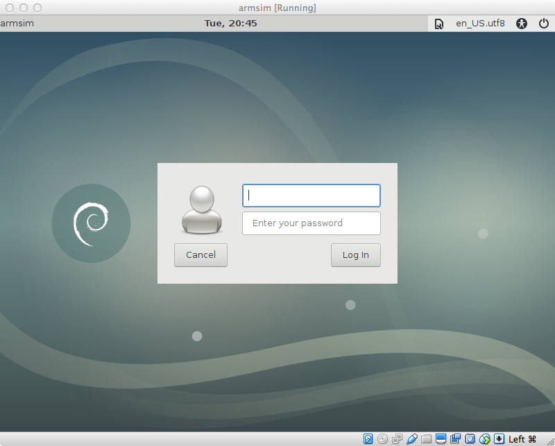

The installation process for ARMSim# differs if you're on Windows, Linux, or Mac. You can jump to the appropriate set of instructions by clicking the link below:
You can skip this step if you already have .NET Framework 3.5 installed.
You can download .NET Framework 3.5 directly from Microsoft here.
Run the downloaded .exe file, which should perform the full install.
You can download and install ARMSim# using this link.
Unzip the zipfile and then run the downloaded .msi file, which should perform the full install.
After this install is completed, you should have ARMSim# up and running.
You can download Mono here. You may also be able to download Mono via your distribution's package manager.
I can confirm that the mono-complete package for the Debian distribution will provide everything you need for Mono.
Download the zipfile here. Unzip the zipfile as you normally would in some location you can easily access.
The rest of these instructions assume you unzipped this in /home/myself/comp122, resulting in a armsim
folder being created underneath comp122.
Open a terminal window. Change to the directory that contains your unzipped ARMSim#.
For example, if you saved this in /home/myself/comp122, you should issue the following command:
cd /home/myself/comp122/armsim
From here, you should be able to run ARMSim# with:
mono ARMSim.exe
Every time you run ARMSim# in the future, you will need to follow this step (3). You only ever need to install Mono and unzip ARMSim# once.
While you can follow the Linux instructions on your Mac and they will appear to work, ARMSim# will not be runnable in the end. ARMSim# instead will crash each time you run it. (If you see otherwise, let me know, as I still don't know why this is.)
To address this problem, I've setup a virtual machine image which already has ARMSim# installed. The virtual machine acts as a self-contained computer (specifically a Linux-based computer) that already has ARMSim# installed. This approach can be used on both Windows and Linux as well as Mac, but it's probably easier to use the Windows/Linux-specific instructions if you can use them.
VirtualBox is software that emulates a computer within a computer. You can download it here. Be sure to pick “OS X hosts” in the menu, which will download a Mac-specific version of VirtualBox.
Download the machine image here (warning: this file is 1.57 GB in size, so the download may take awhile).
Open VirtualBox. Go to File -> Import Appliance, then choose the file you downloaded in the previous step.
Accept all the default settings, and click “Import”. It may take several minutes for VirtualBox to complete the import.
If the import in the previous step was successful, you will see armsim displayed on the left of the VirtualBox window,
along with the word “Aborted”. While the “Aborted” part looks scary,
this is ok; this is merely an artifact of how the image was prepared. Click on armsim, then click Start (the green arrow).
VirtualBox may then ask you about selecting a virtual optical disk file; click Cancel in case this happens.
Eventually you will see a login screen like the one below:
You can login to the virtual machine with the following credentials:
studentstudentpassword
(For the Linux-savvy, the password for the root user is rootpassword.)
Double-click on the ARMSim.sh file on the desktop. This will load ARMSim#.
While VirtualBox runs in a window, this window is itself a self-contained computer. This is a little awkward at first, as you cannot easily do things like copy-and-paste between VirtualBox and anything else (though you can still copy-and-paste within VirtualBox). It also can be challenging to get files into VirtualBox. (For the tech-savvy, you can get these features working, but it requires a significant amount of effort.)
For downloading files, the machine image comes complete with its own Web browser (Applications -> Internet -> Firefox ESR).
For editing files, emacs (Applications -> Development -> GNU Emacs 24 (GUI)) has been installed.
While this setup may take some getting used to, this is the exact same setup I use for running ARMSim#. It requires some substantial effort, but it's doable. :)